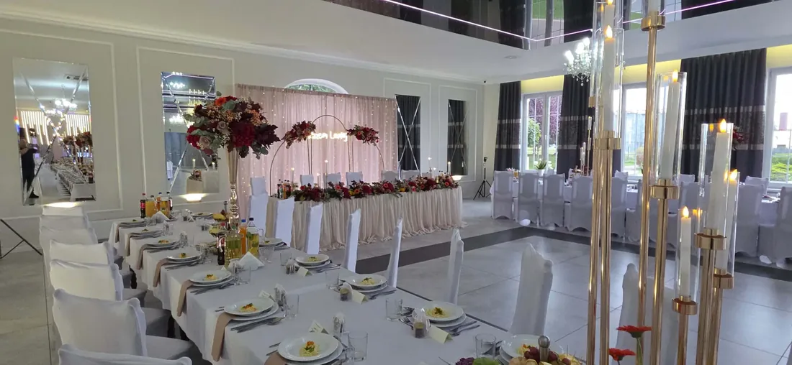
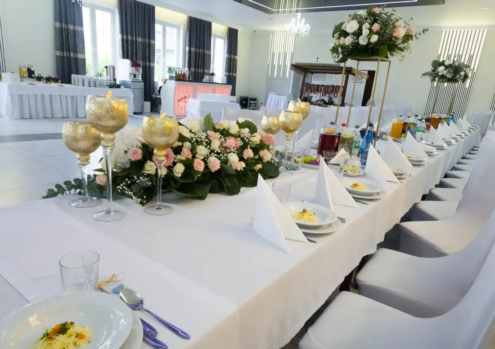
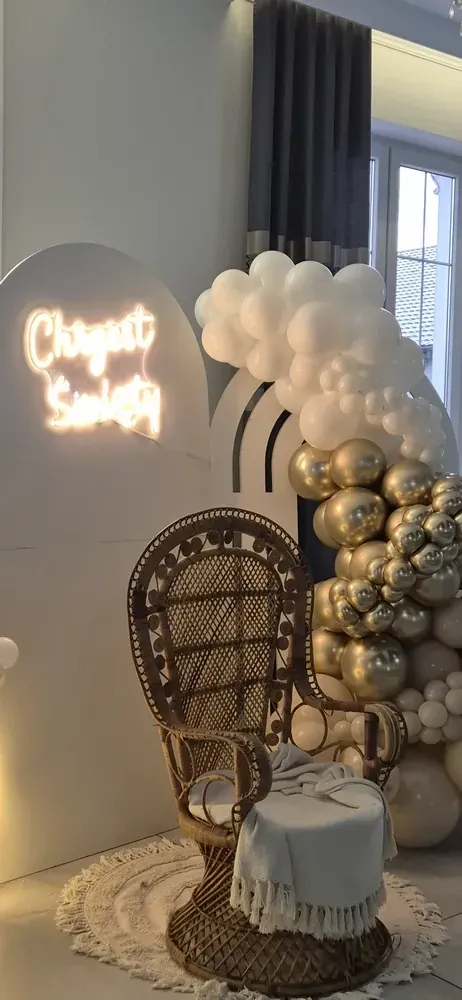
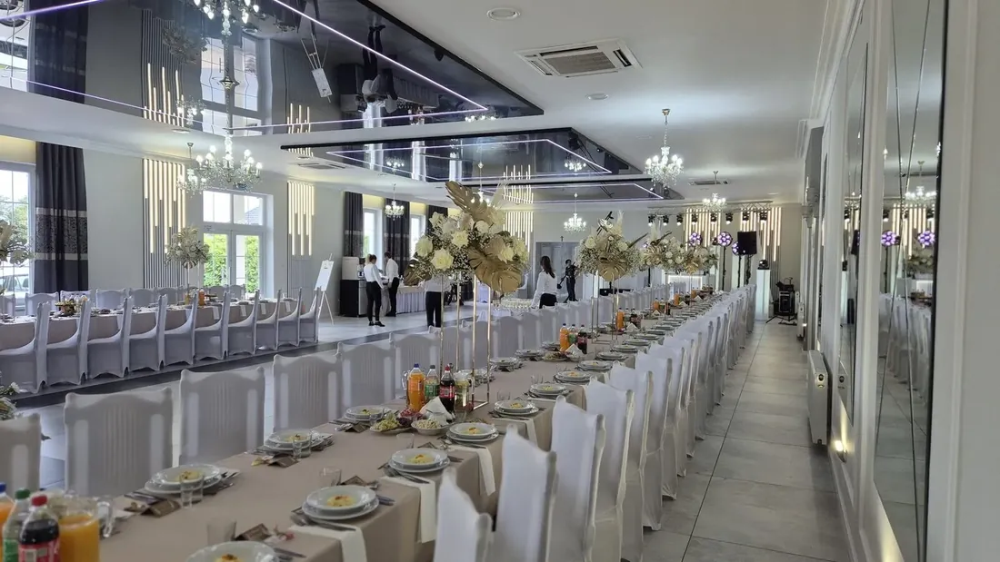
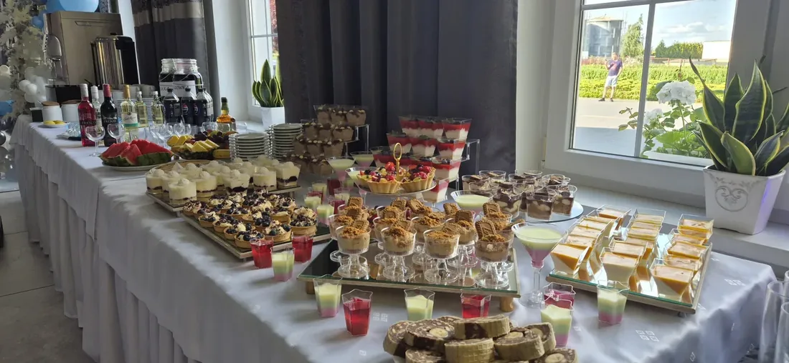
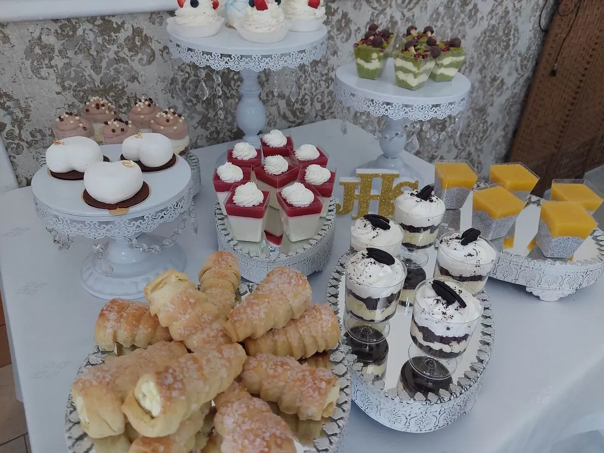
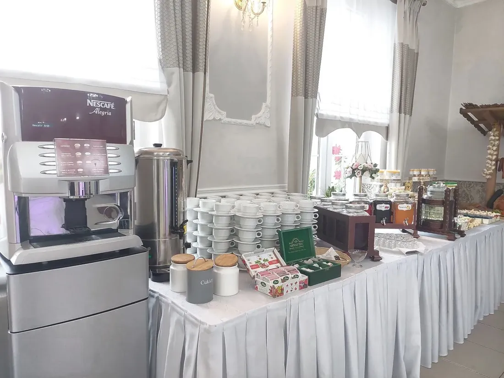
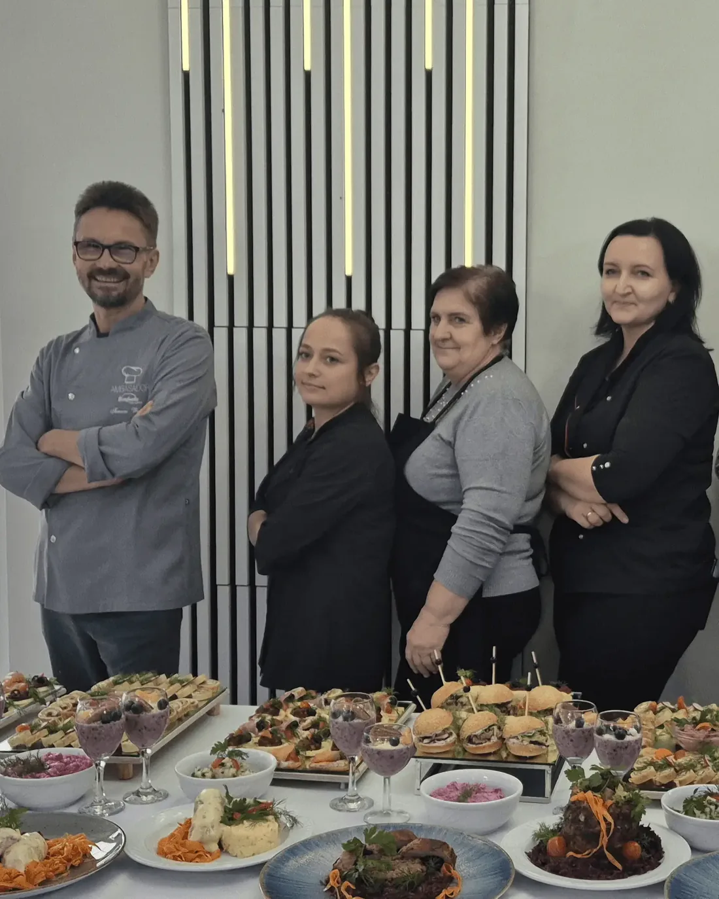
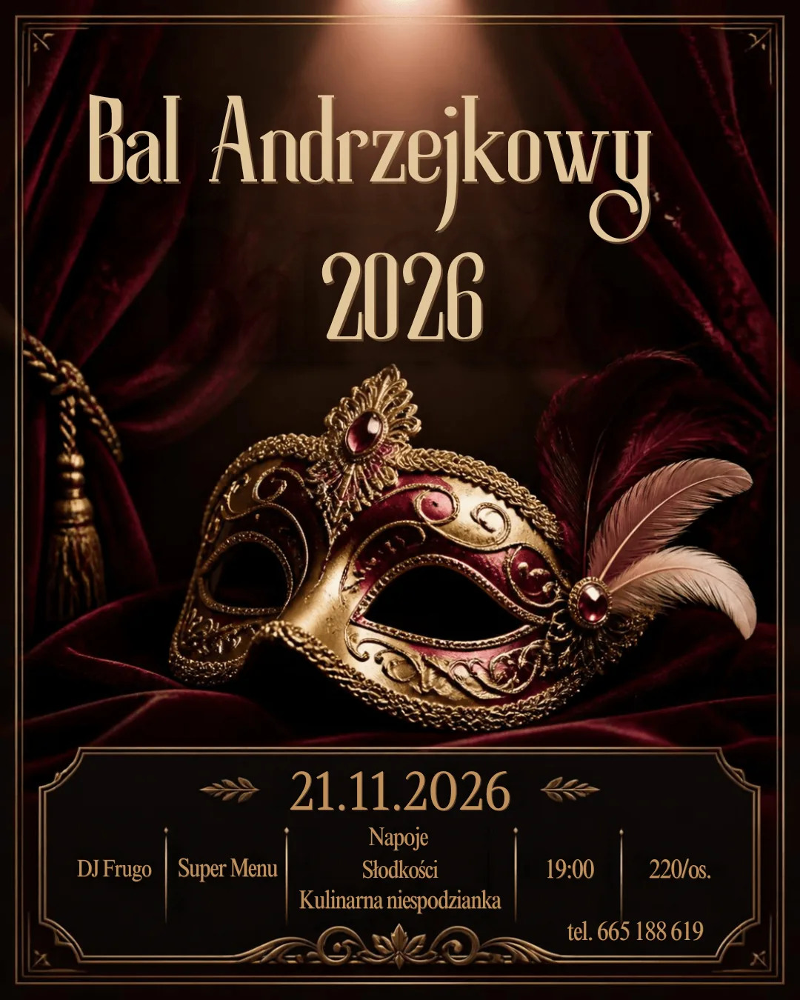
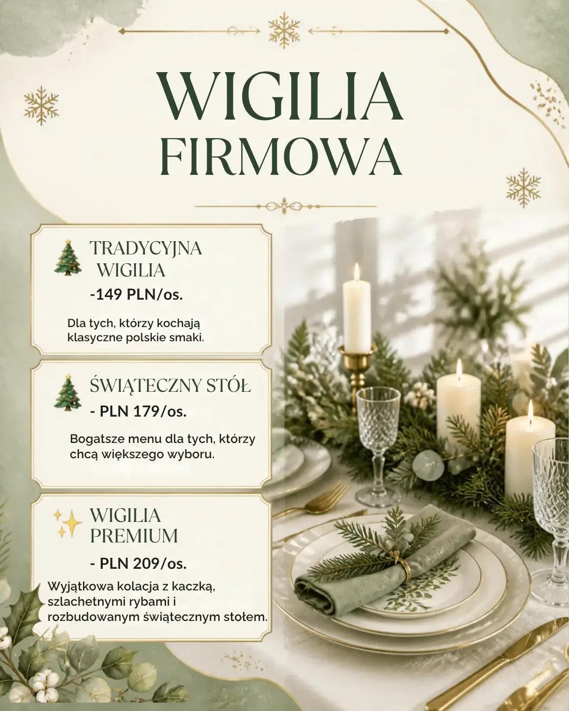

Kaczki Średnie · 4 km od Turku · od 2010 roku
Sala bankietowa Finezja w Turku
Miejsce na Twoje wymarzone przyjęcie – wesele, osiemnastkę, komunię, chrzciny albo spotkanie firmowe. Sala dla 60–160 gości z własną kuchnią, noclegami i ciszą dookoła.
Nowoczesność, klasyczna elegancja i spokój natury
Organizacja ważnych uroczystości – wesela, urodzin, komunii czy spotkania firmowego – wymaga odpowiedniej oprawy i atmosfery. Dlatego warto wybrać miejsce, które spełni wszystkie oczekiwania, zarówno pod względem estetycznym, jak i organizacyjnym.
Sala bankietowa Finezja łączy nowoczesność z klasyczną elegancją. Położona w malowniczej okolicy, zaledwie 4 kilometry od Turku, oferuje nie tylko piękne wnętrza, ale również spokój i bliskość natury. Goście łatwo dojadą na przyjęcie, a na miejscu mają ciszę z dala od miejskiego zgiełku.

Ile było wydarzeń?
Elegancka i przestronna sala bankietowa
Sala i restauracja na 60–160 gości z własną kuchnią, bezpłatnym parkingiem, plenerem i noclegami. Przyjeżdżają do nas rodziny i firmy z Turku, Konina, Koła, Kalisza, Dobrej, Władysławowa i Uniejowa.
od 2010 roku2000+przyjęć
Sala Finezja w szczegółach
Jak wygląda sala?
Jasne, wysokie wnętrze bez narzuconych dekoracji – tło, które dopasujemy do Waszego przyjęcia.
- Doświadczenie
- od 2010 r.: 350 wesel, 730 osiemnastek, 390 chrzcin, 350 komunii, 200 innych przyjęć
- Pojemność sali
- od 60 do 160 osób przy stołach
- Wnętrze
- jasne, wysokie, bez narzuconych dekoracji – pasuje do stylu glamour, boho i rustykalnego
- Układy stołów
- podkowa, długie rzędy, mieszane – dobieramy do liczby gości i charakteru imprezy
- Parkiet
- duży, centralny bez kolumn, ze stanowiskiem dla DJ-a lub zespołu
- Kuchnia
- własna, gotujemy na miejscu – bez cateringu z zewnątrz
- Tort i desery
- własna produkcja: torty na śmietanie, torty lodowe, deserki, monoporcje
- Atrakcje na miejscu
- własna fotobudka i kamera 360
- Parking
- bezpłatny, przy sali
- Zabawa
- wesela do rana – inne imprezy do ustalenia
- Hałas
- sala oddalona od zabudowań – zabawa do rana bez ściszania muzyki
- Plener
- ogród / oczko wodne do sesji zdjęciowej i przerwy na powietrzu
- Noclegi
- ok. 48 miejsc w Kaczkach Średnich: 8 w sali + Bar Kaczki Średnie (4 pokoje) za ścianą + Lawendowa Willa (15 pokoi). Możemy także zapewnić transport gościom
Finezja sala bankietowa · Turek
Jakie przyjęcia organizujemy w Finezji?
Niezależnie od rodzaju przyjęcia nasz zespół pomaga na każdym etapie – od wyboru menu, przez dekoracje, po obsługę techniczną.

Wesela
Ponad 350 wesel od 2010 roku. 60–160 gości, jedno wesele dziennie, zabawa do rana, ok. 48 noclegów w Kaczkach Średnich.
330–380 zł/os.menu 2026Osiemnastki
730 osiemnastek – najczęstsza impreza w Finezji. 40–160 osób, nagłośnienie, fotobudka i kamera 360, obsługa od początku do końca.
od 170 zł/os.Komunie
350 przyjęć komunijnych. Obiad serwowany z ciastami i kawą, osobne menu dla dzieci, tort komunijny z własnej kuchni.
200 zł/os.
Chrzciny
390 przyjęć chrzcinowych. Kameralnie w części sali, kącik dla dzieci, ścianka „Chrzest Święty” w cenie.
od 90 zł/os.z ciastem od 110 złUrodziny i jubileusze
30-tki, 40-tki, 50-tki, rocznice ślubu – kameralnie albo hucznie, z parkietem i DJ-em.
Imprezy firmowe i wigilie
Spotkania i wigilie pracownicze do 160 osób – w sali albo z cateringiem do firmy. Faktura VAT.
od 149 zł/os.wigilia firmowa
Konsolacje
Przyjęcia po pogrzebie nawet z 2–3-dniowym wyprzedzeniem, z prostym menu i dyskretną obsługą.
od 65 zł/os.
Catering i święta
Dania z dowozem dla 5–100 osób, potrawy wigilijne i wielkanocne na wynos. Turek i okolice do 40 km.
cena za porcję


Wykwintna kuchnia – Finezja smaku
Własna kuchnia, własne torty
Wszystkie dania gotujemy na miejscu – nie korzystamy z cateringu z zewnątrz. Menu układamy z każdym klientem osobno: klasyczna kuchnia polska dla starszych gości (rosół, pieczenie, de volaille – wielokrotnie chwalone w opiniach), nowoczesne propozycje dla młodszych, pełnowartościowe dania wegetariańskie, wegańskie, bezglutenowe i bez laktozy.
Tort i słodki stół robimy sami. Nasza cukiernia przygotowuje torty na śmietanie, torty lodowe, deserki i monoporcje. Tort nie jedzie w upale – trafia na stół prosto z kuchni.
Jedno przyjęcie dziennie.
Sala, kuchnia i obsługa pracują wyłącznie dla Was. Nie dzielicie parkingu, kuchni ani parkietu z inną imprezą – a sala stoi z dala od zabudowań, więc zabawa trwa do rana.
Profesjonalna obsługa na najwyższym poziomie
Dlaczego klienci wybierają Finezję?

16 sezonów, ponad 2000 przyjęć
Wiemy, kiedy podać tort, żeby nie kolidował z blokiem tanecznym, jak rozsadzić rodziny i jak poprowadzić osiemnastkę tak, żeby rodzice byli spokojni, a jubilat zadowolony.
Jedno przyjęcie dziennie
Sala, kuchnia i obsługa pracują wyłącznie dla Was. Nie dzielicie parkingu ani parkietu z inną imprezą.
Wszystko w jednym miejscu
Własna kuchnia i torty, fotobudka i kamera 360, noclegi, plener, koordynator – plus 17 sprawdzonych partnerów: DJ-e, floryści, fotografowie, animator, barman, cukiernia.
Bez ukrytych kosztów
Własny alkohol bez opłaty korkowej, własna ekipa (DJ, fotograf, dekorator) bez dodatkowych opłat, dekoracja stołów i koordynator w cenie menu.
4 km od Turku, cisza dookoła
Do centrum Turku kilka minut, do Konina ok. 30 min, do Kalisza ok. 45 min. Zabudowań w pobliżu brak, więc muzyka gra do rana.
Ocena 4,6 z 340 opinii Google
Najczęściej chwalone: jedzenie („tarta tatarska”, „szaszłyki”, „de volaille”), obsługa i klimat sali. Odpowiadamy na każdą opinię, także krytyczną.
Współpraca z nami
Robimy to co tydzień. Wy robicie to raz.
Od pierwszego telefonu do ostatniego tańca – tak wygląda przygotowanie przyjęcia w Finezji.
- Krok 1
Rozmowa
Mówicie, na kiedy i na ile osób planujecie wydarzenie. Doradzimy, co się sprawdzi – najlepiej na miejscu, w sali.
- Krok 2
Termin i menu
Ustalamy datę, liczbę gości i menu. Wszystko na piśmie, bez domysłów.
- Krok 3
Szczegóły
Dekoracja, harmonogram dnia, dodatki – ustalamy z wyprzedzeniem, żeby w dniu imprezy nie było niespodzianek.
- Krok 4
Dzień wydarzenia
Sala gotowa, stół nakryty, kuchnia i obsługa na miejscu. Wy tylko witacie gości.
Co mówią nasi Goście
Opinie z Google
340 opinii w Google
„Organizowałam tu wesele syna, ponieważ urzekł mnie klimat tego miejsca i fantastyczna obsługa. Jednakże największym potwierdzeniem doskonałego wyboru były zachwyty gości nad podanymi daniami. Fakt – były niesamowite.”
„Wesele w Finezji było dla nas niezapomnianym przeżyciem. Sala była pięknie oświetlona, a aranżacje kwiatowe dodawały uroku całemu miejscu. Jedzenie było po prostu przepyszne, szczególnie tarta tatarska i szaszłyki.”
„Wyrażam pozytywną opinię z 18 mojej córki, która odbyła się w miniony piątek w restauracji Finezja. Jedzenie było przepyszne, świeże, a Panie w obsłudze i kuchni przemiłe. To nie była moja pierwsza impreza, lecz kolejna na tej sali, i nic mnie nie zawiodło.”
„Robiliśmy u Państwa niejedną imprezę i jak zawsze jesteśmy bardzo zadowoleni. Jedzenie przepyszne, dużo i te wasze devolaje, obsługa na najwyższym poziomie, przemili ludzie. Z cateringu również jesteśmy zadowoleni – przede wszystkim ciepły.”
„Zamówiony udziec z dodatkami dla 20 osób plus kilka sałatek na zimno – pierwsza klasa, wykonanie bardzo smaczne, każdy gość bardzo zadowolony. Na pewno jeszcze powtórzę zamówienie.”
„Bardzo fajne miejsce na imprezę. Jedzonko wyśmienite, obsługa bardzo miła. Polecam na większe i mniejsze uroczystości rodzinne.”
„Catering na czas, wszystko ciepłe i pyszne – polecam!”
Najbliższe wydarzenia
Jesień i grudzień w Finezji
Bal Andrzejkowy otwarty dla wszystkich i wigilie firmowe – soboty grudnia rozchodzą się zwykle już w październiku.

Sobota, 21 listopada 2026 · 19:00
Bal Andrzejkowy 2026
Uroczysta kolacja, żurek, kulinarna niespodzianka, druga ciepła kolacja po północy i DJ do 4:00. Bilety od 220 zł/os.
Program i rezerwacja
Grudzień 2026 · 20–160 osób
Wigilia firmowa
Sala na wyłączność albo catering do firmy. Trzy zestawy: Tradycyjny 149 zł, Świąteczny 179 zł i Bankietowy 209 zł od osoby.
Menu i kosztorysIle osób pomieści Sala Bankietowa Finezja?
Sala Bankietowa Finezja może pomieścić do 160 osób. W przypadku wesel i większych uroczystości liczba gości jest każdorazowo dopasowywana do wybranego układu stołów, aby zapewnić wszystkim komfort i swobodę podczas przyjęcia.
Czy Finezja oferuje noclegi dla gości weselnych?
Tak. Na terenie obiektu dysponujemy miejscami noclegowymi dla około 10 osób. Dodatkowo współpracujemy z pobliskimi obiektami noclegowymi. Tuż obok Finezji znajduje się baza noclegowa dla około 12 osób, a zaledwie 700 metrów od sali położona jest Lawendowa Willa oferująca 15 pokoi dla gości.
Jakie są możliwości ustawienia stołów?
Układ stołów dostosowujemy do charakteru wydarzenia oraz liczby gości. Najczęściej organizujemy przyjęcia przy stołach prostokątnych, które zapewniają wygodę i dużą liczbę miejsc. Istnieje również możliwość indywidualnego ustalenia układu sali podczas spotkania organizacyjnego.
Czy Sala Bankietowa Finezja jest klimatyzowana i posiada parking?
Tak. Sala jest wyposażona w klimatyzację oraz wentylację mechaniczną, dzięki czemu goście czują się komfortowo niezależnie od pory roku. Dla uczestników wydarzeń dostępny jest również przestronny parking przy obiekcie.
Czy menu Finezji uwzględnia diety specjalne?
Tak. Przygotowujemy dania dostosowane do indywidualnych potrzeb gości, w tym menu wegetariańskie, bezglutenowe oraz inne warianty dietetyczne po wcześniejszym uzgodnieniu szczegółów.
Jaki jest koszt organizacji wesela lub komunii?
Cena przyjęcia zależy od wybranego menu, liczby gości oraz zakresu usług dodatkowych. Każdą wycenę przygotowujemy indywidualnie. Aby otrzymać aktualną ofertę, zapraszamy do kontaktu telefonicznego lub przez formularz na stronie.
Do jakich miejscowości Finezja dowozi catering?
Realizujemy catering na terenie Turku oraz okolicznych miejscowości. Obsługujemy między innymi Turek, Brudzew, Tuliszków, Dobrę, Malanów, Kawęczyn, Przykona, Uniejów, Koło, Konin i okolice. W przypadku większych zamówień istnieje możliwość dostawy również do bardziej oddalonych lokalizacji.
Do kiedy można zamawiać catering na Wigilię lub Wielkanoc?
Zamówienia przyjmujemy do wyczerpania dostępnych terminów. Ze względu na duże zainteresowanie zalecamy składanie zamówień świątecznych z kilkutygodniowym wyprzedzeniem.
Czy w Finezji można zorganizować ślub lub przyjęcie w plenerze?
Tak. Wokół obiektu znajduje się przestrzeń, która może być wykorzystana do organizacji wydarzeń plenerowych, sesji zdjęciowych oraz chwil relaksu dla gości podczas przyjęcia.
Czy sala zapewnia dekoracje na osiemnastki, chrzciny i inne uroczystości?
Tak. Pomagamy w organizacji dekoracji dopasowanych do charakteru wydarzenia. Współpracujemy ze sprawdzonymi dekoratorami, dzięki czemu możemy przygotować zarówno eleganckie dekoracje weselne, jak i aranżacje na chrzciny, komunie czy osiemnaste urodziny.
Jakie są opinie o jedzeniu w Finezji?
Naszą największą dumą jest kuchnia. Goście regularnie podkreślają wysoką jakość potraw, duże porcje oraz domowy smak dań. Wysokie oceny i pozytywne rekomendacje klientów są dla nas najlepszym potwierdzeniem jakości naszych usług.
Z jakim wyprzedzeniem należy rezerwować salę?
Najbardziej popularne terminy weselne są rezerwowane nawet 2–3 lata wcześniej. W przypadku komunii warto dokonać rezerwacji około 12–24 miesiące przed planowaną uroczystością. Na mniejsze przyjęcia rodzinne często dostępne są również wolne terminy w krótszym czasie.
Kiedy najlepiej zarezerwować salę weselną?
Im wcześniej, tym lepiej. Jeśli zależy Państwu na konkretnym terminie w sezonie weselnym, rekomendujemy rezerwację nawet 24–36 miesięcy wcześniej. Dzięki temu mają Państwo największy wybór terminów i spokojny czas na planowanie uroczystości.
Czy styl sali musi pasować do dekoracji?
Nie. Nowoczesne i eleganckie wnętrza Finezji stanowią doskonałą bazę dla wielu stylów dekoracyjnych. Organizujemy przyjęcia w stylu klasycznym, glamour, rustykalnym, boho czy nowoczesnym.
Na co zwrócić uwagę podczas wizji lokalnej sali weselnej?
Podczas wizyty warto sprawdzić wielkość sali, dostępność parkingu, klimatyzację, zaplecze kuchenne, możliwości noclegowe, układ stołów oraz jakość obsługi. W Finezji chętnie odpowiadamy na wszystkie pytania i pokazujemy obiekt podczas indywidualnego spotkania.
Jakie opcje menu są zazwyczaj dostępne?
Oferujemy szeroki wybór dań obiadowych, przystawek, sałatek, deserów oraz dań gorących serwowanych w trakcie przyjęcia. Menu jest elastyczne i może zostać dostosowane do charakteru wydarzenia oraz preferencji gości.
Jakie elementy powinny być jasno określone w umowie?
Umowa powinna zawierać termin uroczystości, liczbę gości, zakres menu, harmonogram płatności, warunki rezerwacji, godziny trwania przyjęcia oraz wszystkie dodatkowe ustalenia. Dzięki temu obie strony mają pewność, że organizacja wydarzenia przebiegnie zgodnie z planem.
Rodzinne i firmowe imprezy — Turek i okolice
Wesele na 160 osób, chrzciny, komunia, jubileusz, konsolacja, a może sylwester w gronie przyjaciół? Jeśli mieszkasz w Turku lub okolicy i szukasz sali idealnej na takie imprezy, to Finezja w Kaczkach Średnich będzie spełnieniem Twoich marzeń oraz oczekiwań. To przestrzeń, w której spędzisz ważne dla Ciebie chwile dokładnie tak, jak to zaplanowałeś. Nowoczesny wystrój, przestronne wnętrza, odpowiednie oświetlenie, ale też — możliwość obcowania z naturą tuż po wyjściu z lokalu sprawią, że jeszcze długo będziesz pamiętać spędzony tutaj czas. Zapraszamy do zapoznania się ze szczegółami.
Organizacja imprez z jedzeniem w pobliżu Turku
Odpowiednie podjęcie gości wymaga nie tylko pięknej przestrzeni, ale też dobrego jedzenia. Dlatego w Finezji zadbamy o to, aby zaproszone przez Ciebie osoby mogły skosztować najlepszych potraw. Wszystkie nasze dania przygotowujemy z największą starannością i tylko ze świeżych składników. Dbamy zarówno o stronę wizualną, jak i smakową wszystkich serwowanych potraw — od przystawek, poprzez zupy, dania główne aż po desery, które rozpieszczają wyważoną słodyczą. Wszystko jest pięknie podane, więc Tobie i Twoim gościom pozostaje jedynie celebrować ważne dla Was chwile.
Szukasz sali bankietowej? Wybierz Finezję!
Z sali bankietowej Finezja korzystają nie tylko Klienci z Turku, ale też z Kalisza czy Konina. To miejsce, w którym miło spędzisz czas — niezależnie od rodzaju imprezy, na jaką ją zarezerwowałeś. Powiedz nam, jaki wystrój Cię interesuje, jakiego menu oczekujesz, a także — ile osób zaprosisz na wydarzenie. Resztą zajmiemy się my — przygotujemy dekoracje, ustawimy stoły i zadbamy o w pełni profesjonalną obsługę przy stolikach. Sprawimy, że czas spędzony u nas zapamiętasz pozytywnie na naprawdę wiele lat.
Dlaczego sala bankietowa Finezja to najlepszy wybór?
Mamy wieloletnie doświadczenie w organizacji imprez, co czyni z nas partnerów godnych zaufania. Atutem Finezji jest jednak przede wszystkim jej lokalizacja — doskonały dojazd zarówno z Turku, Konina, jak i Kalisza sprawia, że jest to jedno z najczęściej polecanych w tej części Wielkopolski miejsc na imprezy. Z dala od zgiełku, w otoczeniu malowniczej przyrody i z w pełni spersonalizowanym podejściem do Klienta realizujemy zlecenia na każdy rodzaj wydarzeń. Wolisz świętować na świeżym powietrzu? Możemy urządzić dla Ciebie event poza salą bankietową. Zadzwoń, porozmawiaj, przyjedź i podpisz umowę współpracy — zaplanuj ważny dla Ciebie dzień z Finezją!
Kaczki Średnie 10c · 4 km od Turku
Zarezerwuj swoje przyjęcie w Finezji
Planujesz wesele, urodziny, komunię czy spotkanie firmowe? Skontaktuj się z nami i zarezerwuj termin – sala bankietowa Finezja pod Turkiem czeka na Twoją uroczystość.
665 188 619- Drugi telefon
- 601 637 397
- Adres
- Kaczki Średnie 10c, 62-700 Turek
Do Turku kilka minut, z Konina ok. 30 min, z Kalisza ok. 50 min - Godziny otwarcia
- Pon. 10:00–13:00 · Czw. 9:00–13:00
Pt.–niedz. 9:00–21:00